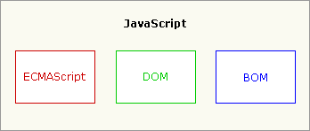

primary javascript
this page introduce primary javascript, including ECMAScript/data type/basic functions .
Definition
- ECMAScript
-
ECMAScript，正式名称为 ECMA 262 和 ISO/IEC 16262，是宿主环境中脚本语言的国际 Web 标准。 ECMAScript 描述了以下内容：
- 语法
- 类型
- 语句
- 关键字
- 保留字
- 运算符
- 对象
ECMAScript 仅仅是一个描述，定义了脚本语言的所有属性、方法和对象。其他语言可以实现 ECMAScript 来作为功能的基准，JavaScript 是 ECMAScript 规范的一种实现。
- javacript组成
-
尽管 ECMAScript 是一个重要的标准，但它并不是 JavaScript 唯一的部分，当然，也不是唯一被标准化的部分。实际上，一个完整的 JavaScript 实现是由以下 3 个不同部分组成的：
- 核心（ECMAScript）
- 文档对象模型（DOM）
- 浏览器对象模型（BOM）

typeof 和 instance of的区别
typeof
typeof 是一个一元运算，放在一个运算数之前，运算数可以是任意类型。 它返回值是一个字符串，该字符串说明运算数的类型。typeof 一般只能返回如下几个结果： number,boolean,string,function,object,undefined。我们可以使用 typeof 来获取一个变量是否存在，如 if(typeof a!="undefined"){alert("ok")}，而不要去使用 if(a) 因为如果 a 不存在（未声明）则会出错，对于 Array,Null 等特殊对象使用 typeof 一律返回 object，这正是 typeof 的局限性。
instanceof
instanceof 用于判断一个变量是否某个对象的实例， 如 var a=new Array();alert(a instanceof Array); 会返回 true， 同时 alert(a instanceof Object) 也会返回 true;这是因为 Array 是 object的子类。 再如：function test(){};var a=new test();alert(a instanceof test) 会返回true
this关键字的指向
熟练度有关：js选择器
<html:radio>
获取选中的radio对象：var myradio= $('input:radio[name="type"]:checked');
radio是否选中：var isCheck = $('#box')[0].checked;
选中radio：$('#radioid').attr('checked', 'checked');
<html:checkbox>标签
获取所有选中的checkbox： var array = $('input:[name=checkboxname]:checked');
checkbox是否选中： var isChecked = $('#checkboxid')[0].checked;
选中checkbox： $('#checkboxid').attr('checked', 'checked');
<html:select>标签
获取select的所有option： var array = = $("#selectid option");
获取选中的select： var isChecked = $("#selectid option:selected").val();
选中select： $('#selectid ').attr('selected', 'selected');
选择HTML内容
● innerHTML 设置或获取位于对象起始和结束标签内的 HTML
● outerHTML 设置或获取对象及其内容的 HTML 形式
● innerText 设置或获取位于对象起始和结束标签内的文本
● outerText 设置(包括标签)或获取(不包括标签)对象的文本
熟练度有关：数组操作
Array.forEach()//遍历
Array.map()//遍历并修改
Array.filter()//遍历并过滤
Array.indexOf()//某个元素在数组中的位置
Array.every()//遍历每个元素，如果对于每个元素，这个回调函数都返回true，则.every()返回true。否则，.every() 返回false。
熟练度有关：jquery操作
jQuery.extend(object)//为jQuery类添加类方法，可以理解为添加静态方法。
Objectj Query.extend( target, object1, [objectN])//用一个或多个其他对象来扩展一个对象，返回被扩展的对象
jQuery.fn.extend(object)//对jQuery.prototype进得扩展，就是为jQuery类添加“成员函数”。
熟练度有关：js闭包
//闭包的例子
function count() {
var arr = [];
for (var i=1; i<=3; i++) {
arr.push((function (n) {
return function () {
return n * n;
}
})(i));
}
return arr;
}
var results = count();
var f1 = results[0];//1
var f2 = results[1];//4
var f3 = results[2];//9
//在面向对象的程序设计语言里，比如Java和C++，要在对象内部封装一个私有变量，可以用private修饰一个成员变量。
js没有class机制，只有函数，借助闭包，同样可以封装一个私有变量。我们用JavaScript创建一个计数器：
'use strict';
function create_counter(initial) {
var x = initial || 0;
return {
inc: function () {
x += 1;
return x;
}
}
}
//它用起来像这样：
var c2 = create_counter(10);
c2.inc(); // 11
c2.inc(); // 12
c2.inc(); // 13
下面是使用闭包实现的一个分页js插件
/**
* fastPage分页插件
*
* @author: 玄葬
*/
Page = function(opt){
var me = this;
me.uid = uuid(); //当前实例唯一标识
me.holderID = opt.holderID; //页数容器id
me.containerID = opt.containerID; //分页容器id
me.holder = $("#"+opt.holderID); //页数容器对象
me.container = $("#"+opt.containerID); //分页容器对象
me.showLength = Number(opt.showLength); //显示的页数长度
me.pageIndex = Number(opt.pageIndex); //当前页索引
me.pageSize = Number(opt.pageSize); //分页大小
me.orderColumn = opt.orderColumn; //排序字段
me.order = opt.order; //排序方式
me.showInfo = opt.showInfo; //是否显示分页信息
me.url = opt.url; //分页查询url
me.data = opt.data; //分页查询参数
me.laterPage = opt.laterPage; //是否稍后分页
me.pageRenderFn = opt.pageRenderFn; //页面渲染回调函数
me.navRenderFn = opt.navRenderFn; //导航栏渲染回调函数
fastPage.instances[me.uid] = me;
if (!me.laterPage) {
this.gotoPage(this.pageIndex);
}
}
Page.prototype = {
constructor: Page,
reload: function(url, data){
this.url = url;
this.data = data;
this.gotoPage(1);
},
refresh: function(){
this.gotoPage(this.pageIndex);
},
gotoPage: function(idx){
if (typeof idx == "undefined" || idx == null) {
this.pageIndex = 1;
}else{
this.pageIndex = idx;
}
this.ajaxPage();
},
prePage: function(){
this.pageIndex--;
this.ajaxPage();
},
nextPage: function(){
this.pageIndex++;
this.ajaxPage();
},
/**
* 翻页方法
*/
ajaxPage: function(){
var url = this.url;
var data = this.data;
if (typeof this.data == "undefined" || this.data == null) {
data = {};
}
data.iDisplayStart = (this.pageIndex-1)*this.pageSize;
data.iDisplayLength = this.pageSize;
data.orderColumn = this.orderColumn;
data.sSortDir_0 = this.order;
var instance = this;
var callback = function(data) {
if (typeof this.pageRenderFn == "function") { //渲染页面
this.pageRenderFn(data, this);
} else {
console.error("fastPage插件未声明渲染回调函数");
}
if (typeof this.navRenderFn == "function") { //渲染导航栏
this.navRenderFn(data, this);
}else{
this.defaultNavRenderFn(data);
}
scrollTo(0, 0);
}
$.ajax({
type: "POST",
url: url,
data: data,
dataType: "json",
success: function(data){
if(data.operationFlag==1){
if (typeof callback == "function") {
callback.call(instance, data);
}
}else{
console.error("ajax请求出错："+data.retMessage);
}
},
error: function(XMLHttpRequest, textStatus, errorThrown) {
console.error("ajax请求失败，网络异常状态码："+textStatus);
}
});
},
/**
* 默认的渲染分页栏函数
*/
defaultNavRenderFn: function(data){
var rowTotal = data.pageVo.iTotalRecords; //总记录数量
var pageTotal = Math.ceil(rowTotal/this.pageSize); //总页数
var startRow = (this.pageIndex-1)*this.pageSize+1; //当前开始条数
var endRow = (this.pageIndex)*this.pageSize; //当前结束条数
endRow = endRow>rowTotal ? rowTotal : endRow;
var navHtml = '';
if (this.showInfo) {
navHtml += '<div class="col-md-5">';
if (rowTotal == 0) {
navHtml += '<div class="pagination navbar-left" style="margin-top: 30px;" id="pageNav_info">总共'+pageTotal+' 页，全部记录'+rowTotal+' 条 </div>';
}else{
navHtml += '<div class="pagination navbar-left" style="margin-top: 30px;" id="pageNav_info">总共'+pageTotal+' 页，显示第'+startRow+' 到第 '+endRow+' 条，全部记录'+rowTotal+' 条 </div>';
}
navHtml += '</div>';
navHtml += '<div class="col-md-7"><ul class="pagination navbar-right" id="pageNav_content">';
}else{
navHtml += '<div class="col-md-12"><ul class="pagination navbar-right" id="pageNav_content">';
}
navHtml += '<li> <a href="javascript:fastPage.executeCommand(\''+this.uid+'\', \'prePage\');"> « </a> </li>';
if (pageTotal > this.showLength) {
append(this.uid, this.pageIndex, 1); //显示首页
if (this.pageIndex < this.showLength-1) {
for (var i = 2; i < this.showLength-1; i++) {
append(this.uid, this.pageIndex, i);
}
navHtml+= '<li><a href="javascript:return false;">...</a></li>';
}else if(this.pageIndex >= this.showLength-1 && this.pageIndex <= pageTotal-(this.showLength-2)) {
navHtml+= '<li><a href="javascript:return false;">...</a></li>';
for (var i = this.pageIndex; i < this.pageIndex+(this.showLength-4); i++) {
append(this.uid, this.pageIndex, i);
}
navHtml+= '<li><a href="javascript:return false;">...</a></li>';
}else if(this.pageIndex > pageTotal-(this.showLength-2)) {
navHtml+= '<li><a href="javascript:return false;">...</a></li>';
for (var i = (pageTotal-(this.showLength-3)); i < pageTotal; i++) {
append(this.uid, this.pageIndex, i);
}
}
append(this.uid, this.pageIndex, pageTotal); //显示尾页
}else{
for (var i = 1; i <= pageTotal; i++) {
append(this.uid, this.pageIndex, i);
}
}
navHtml+= '<li> <a href="javascript:fastPage.executeCommand(\''+this.uid+'\', \'nextPage\');"> » </a> </li>';
navHtml += '</ul></div>';
this.holder.html(navHtml);
if (this.pageIndex == 1) { //置灰上一页下一页
this.holder.find("#pageNav_content").children().first().find("a").addClass("disable");
this.holder.find("#pageNav_content").children().first().find("a").attr("href", "javascript:return false;");
}
if (this.pageIndex == pageTotal) {
this.holder.find("#pageNav_content").children().last().find("a").addClass("disable");
this.holder.find("#pageNav_content").children().last().find("a").attr("href", "javascript:return false;");
}
/** 叠加页数 **/
function append(uid, pageIndex, i){
if (pageIndex == i) {
navHtml+= '<li class="active"><a href="javascript:fastPage.executeCommand(\''+uid+'\', \'gotoPage\', '+i+');">'+i+'</a></li>';
}else{
navHtml+= '<li><a href="javascript:fastPage.executeCommand(\''+uid+'\', \'gotoPage\', '+i+');">'+i+'</a></li>';
}
}
}
}
var fastPage = {
instances: {},
page: function(opt){
var p = new Page(opt);
return p;
},
/**
* 公共类方法
* 用于执行Page实例的指定方法
* @param id 实例id
* @param fnName 函数名
* @param param 参数
*/
executeCommand: function(id, fnName, param){
var p = this.instances[id];
p[fnName].call(p, param);
}
};
function uuid() {
var s = [];
var hexDigits = "0123456789abcdef";
for (var i = 0; i < 36; i++) {
s[i] = hexDigits.substr(Math.floor(Math.random() * 0x10), 1);
}
s[14] = "4"; // bits 12-15 of the time_hi_and_version field to 0010
s[19] = hexDigits.substr((s[19] & 0x3) | 0x8, 1); // bits 6-7 of the clock_seq_hi_and_reserved to 01
s[8] = s[13] = s[18] = s[23] = "-";
var uuid = s.join("");
return uuid;
}
熟练度有关：JavaScript 箭头函数
//箭头函数就是丢掉了关键字 function，然后用一个箭头 => 来分离一个匿名函数的参数部分和函数体：
(x, y) => x * y;
//这相当于:
function(x, y){
return x * y;
}